<br><br> ## <p><mark>No News is still news</mark></p><p><mark>Missing values in CRE data</mark></p><span class="subtitle transparent50"><br/><mark>Thies Lindenthal / htl24@cam.ac.uk / March 18, 2026</mark></span>
## More is more! <span class="subtitle"><br/>Data are scarce and valuable: Preserve as much data as possible</span> * New work with Kahshin Leow: Paper on <a href="https://www.landecon.cam.ac.uk/cambridge-real-estate-research-centre"> CRERC website</a>. * Stylised example to motivate the exercise: Imagine a dataset with 50 obs. and 50 features. Features miss value in 3% of observations. <div class='figure'> <p>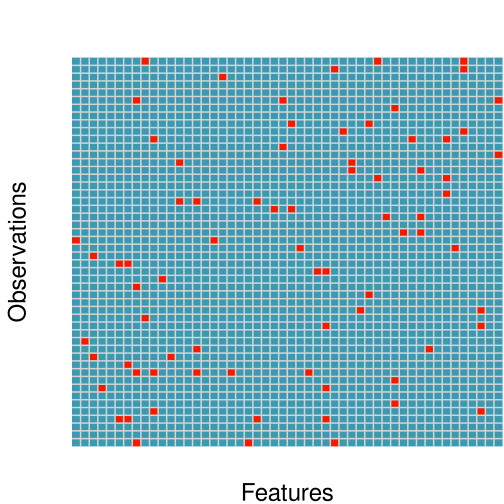</p> </div>
## Even few Missing Values hurt!<span class="subtitle"><br/>In traditional regressions, we typically face a dilemma: Sacrifice obs or features?</span> * Same data, rows and columns ordered by row sums and occurance of first NA. <div class='figure'> <p>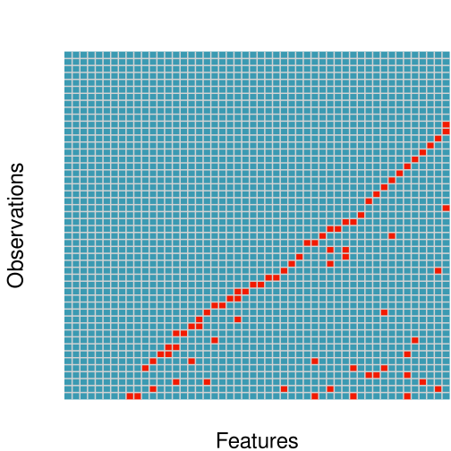</p> </div>
## Modelling choices<span class="subtitle"><br/>Maximise rows?</span> * In (commercial) real estate, we often have relatively small samples. Can we afford to lose any obs? <div class='figure'> <p>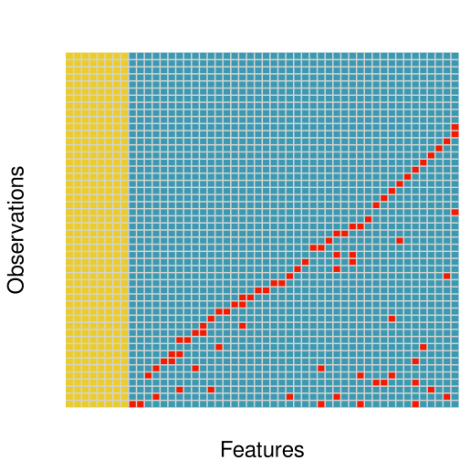</p> </div>
## Modelling choices<span class="subtitle"><br/>Or preserve feature richness?</span> * Real estate is high-dimensional. It's a waste to lose informative features. <div class='figure'> <p>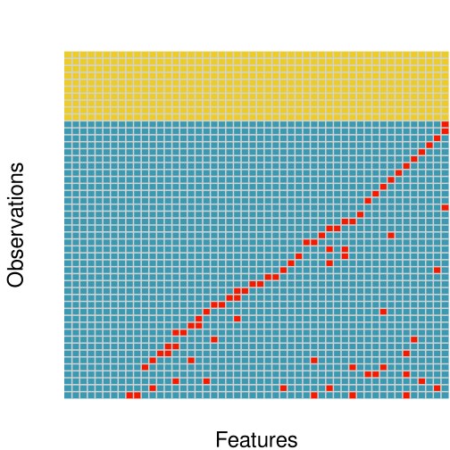</p> </div>
## Compromises? Mitigation?<span class="subtitle"><br/>Balance height/width of dataset? Focus on most relevant obs and features?</span> * Adjust functional form? Interpolate? Strategic data collection? * Entire textbooks cover topic: "Statistical Analysis with Missing Data" (Little and Rubin, 2019). <div class='figure'> <p>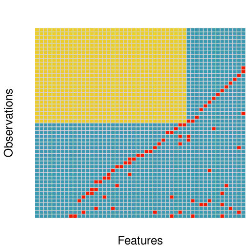</p> </div>
## Real data: NCREIF CRE SALES<span class="subtitle"><br/>14,470 sales 1978–2020. 60 asset-level covariates</span> * Key variables: age, net inc., cap-ex, loan interest, % leased, net rentable area, cap rate, prop. type, manager group ID, MSA <div class='figure'> <p>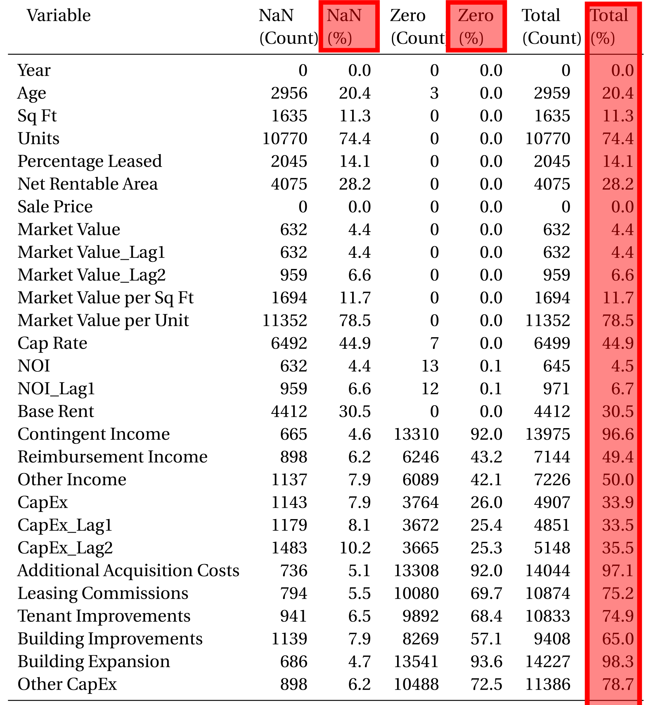</p> </div>
## Strategic reporting?<span class="subtitle"><br/>"Missingness" is not constant in time—and dynamics differ across features.</span> * Similar to Hughes & Nichols (2005): "No news is bad news: Monitoring, risk, and stale financial performance in commercial real estate" <div class='figure'> <p>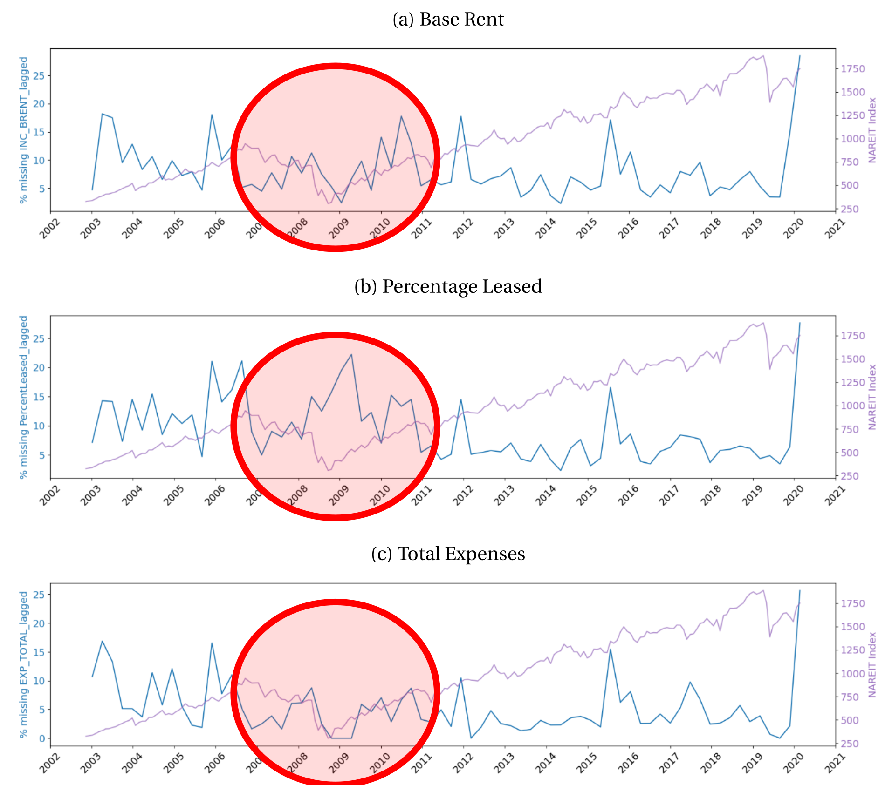</p> </div>
<div class='figure'> </div>
## Sparsity-aware ML Approaches<span class="subtitle"><br/>Tree example: XGBoost</span> * Forests of trees with/without features/obs + default directions when the feature needed for the split is missing. <div class='figure'> <p>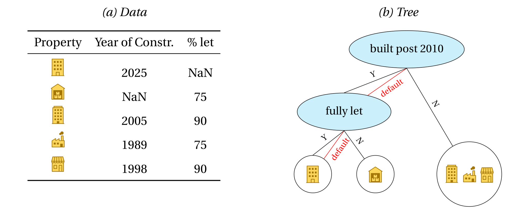</p> </div>
## Model horse race<span class="subtitle"><br/>Sparsity-aware tree models benefit from keeping obs/features: More is more!</span> <div class='figure'> <p>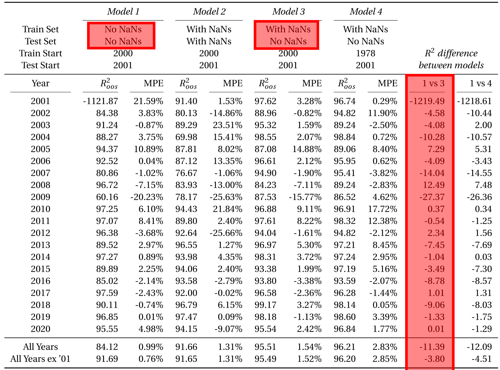</p> </div>
## Compromises...<span class="subtitle"><br/>What if we drop the 10 features with the highest rates of NA's?</span> * Model 1 benefits from A LOT more training data. Model 3 has fewer features to train on. <div class='figure'> <p>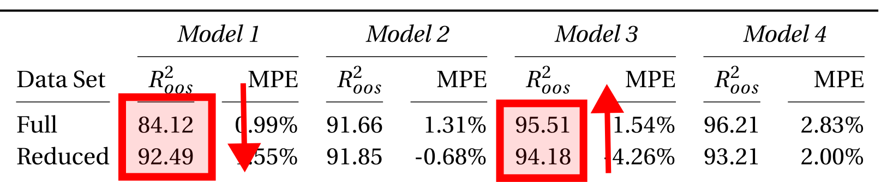</p> </div>
## Feature importance<span class="subtitle"><br/>Ranking of features changes when NAs are kept (robustness of many xAI attempts?) </span> <div class='figure'> <p>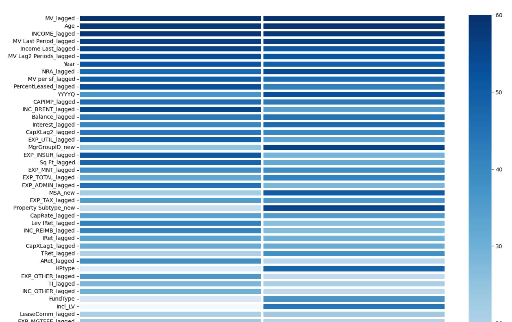</p> </div>
## Marginal price effects <span class="subtitle"><br/>Marginal association between expected price and asset-level features</span> * Lagged appraisal values seem to matter either way... Age effects differ! <div class='figure'> <p>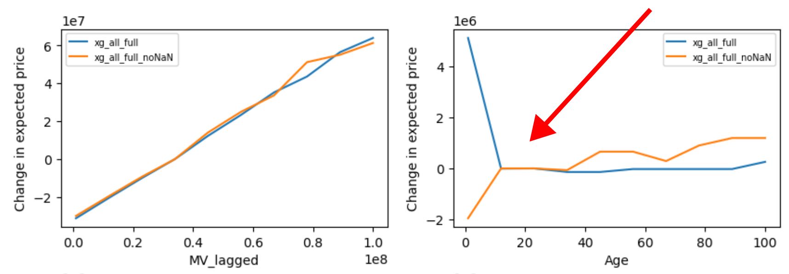</p> </div>
## Marginal price effects <span class="subtitle"><br/>Marginal association between expected price and asset-level features</span> * Performance drops for all models if lagged MV is removed (makes sense). Drop is less drastic for Model 1 as obs. increase. <div class='figure'> <p>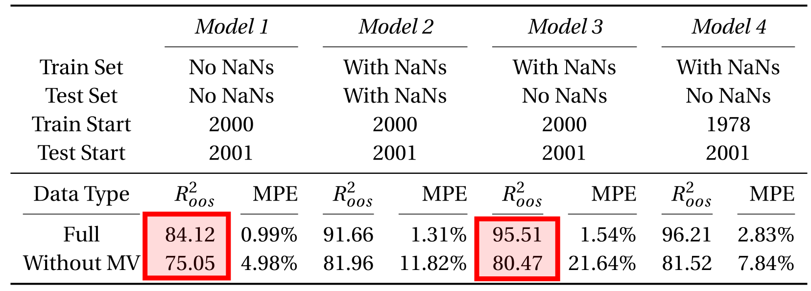</p> </div>